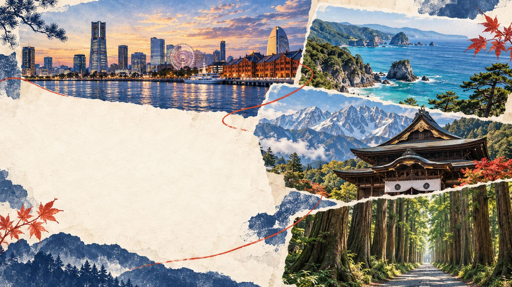

A PERSONAL JAPAN FIELD GUIDE 2026.09.27 — 10.06
去日本，
沿海到山。
香港 · 横滨 · 伊豆 · 长野 · 小布施 · 户隐
十天九晚，按自己的节奏走。
每日行程
日期可切换，路线可改选；所有地点都能直接打开地图。
秦野 · 重启人生取景地
10 月 4 日先回横滨酒店寄存行李，再轻装去秦野重走麻美的上学路，最后到梦庵稍早晚餐。
七处顺路的公共取景点，加一处需绕行的文化公园，逐一附导航和打卡。桥、隧道、公园与阶梯都靠近居民区，请轻声步行；剧中的麻美家是有人居住的私人住宅，不列入导航。
小图标明“场景示意”的不是现场照片。点击小图下的画面入口，可查看电视台官方社媒发布的对应画面，或打开逐地点的取景对照资料；本站不复制剧照。外部内容可能因网络或平台限制无法加载，此时请使用“在原帖打开”。
伊豆，别错过这六站
南伊豆的白沙和海蚀洞，东伊豆的火山口、灯塔与门胁吊桥，分在两天走更从容。
下田退房后绕大室山和城崎海岸，再回稻取吃旅馆晚餐，公共交通会很紧。A 方案建议提前约车或分段打车；只想稳稳看门胁吊桥选 B，风雨天选 C。城崎海岸站至吊桥一带步行约 35 分钟，门胁停车场至吊桥约 2–3 分钟。
伊东观光官方路线与图片两张列车订单
车次、座位和取票码放在一起，出发前请再核对 JR 原始订单。
此网页公开。取票信息虽需点击展开，但任何访问者都能看到，不具备隐私保护作用；纸票以 JR 原始订单和现场出票结果为准。
九晚落脚处
每家酒店的地址和导航，放在一处方便查找。
带着一点余量，走得更尽兴。
车次与开放时间
航班、N'EX、踊り子号以订单和运营方当日公告为准；石廊崎、岩松院和户隐巴士请出发前再核对天气、营业和预订要求。
导航与打卡
点击地点的「Google 地图」会在新页面搜索日文名称与地址。已打卡记录仅保存在这台设备的浏览器，不会同步到别人的手机。
路线的用法
A 是推荐主线，B 是替代或省力线，C 针对天气或交通变化。时间为规划参考，不代表已订车次，除非当天提示明确写明。